Measuring CO2 fluxes over a rice field
27 | Photosynthesis, respiration and net CO2 flux
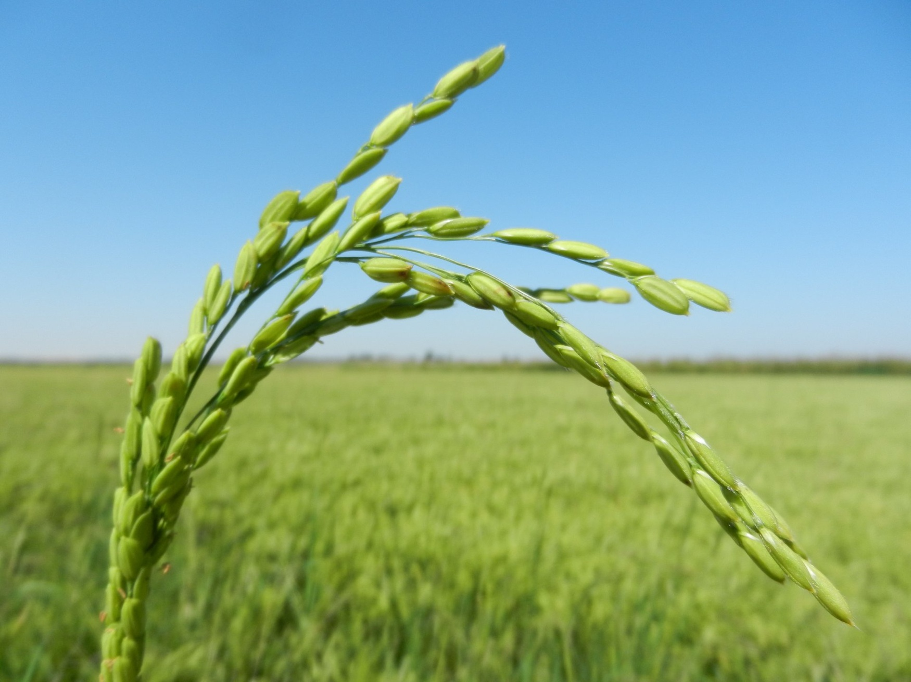
Learning Objectives
- Describe the processes of photosynthesis and respiration
- Give examples of how photosynthesis and respiration are measured
- Understand the photosynthetic efficiency of a leaf
- Know the components of ecosystem and soil respiration
- Know the primary factors influencing ecosystem and soil respiration
- Define the net CO2 exchange of an ecosystem
Photosynthesis
The formation of carbohydrates from water and carbon dioxide in the chlorophyll-containing tissues of plants exposed to light or photosynthetically active radiation, PAR (400-700 nm).
Respiration The oxidation of carbohydrates with the release of CO2 and energy, occurs continuously to provide energy for other plant processes.
The difference between photosynthesis and respiration in the leaf is referred to as net photosynthesis or net assimilation.
Photosynthesis and respiration in the leaf
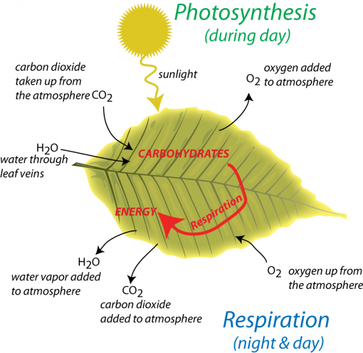
Photosynthesis and respiration in the leaf
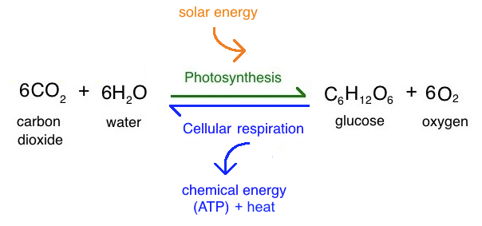
Leaf scale
Ecosystem scale
Measuring photosynthesis and respiration
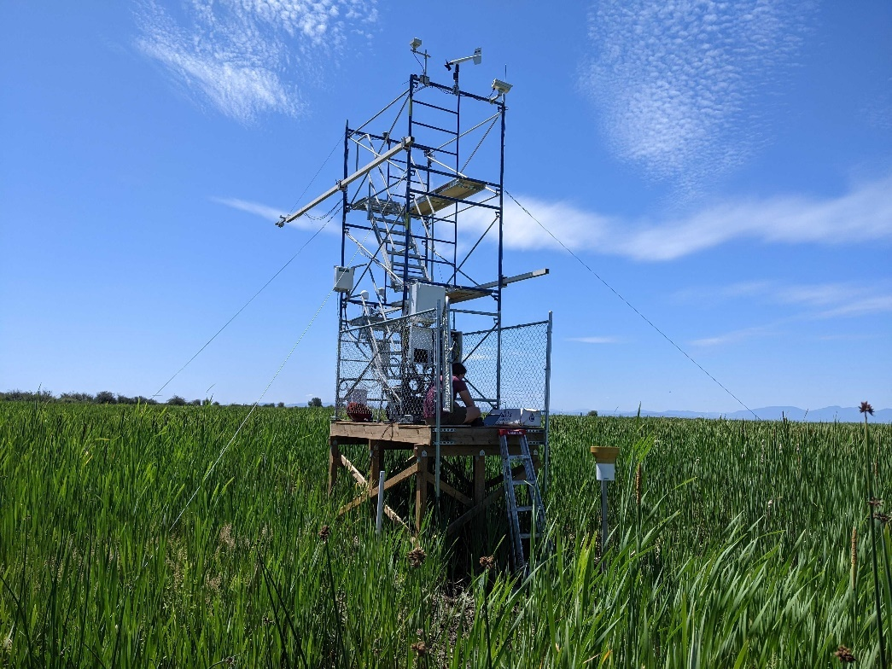
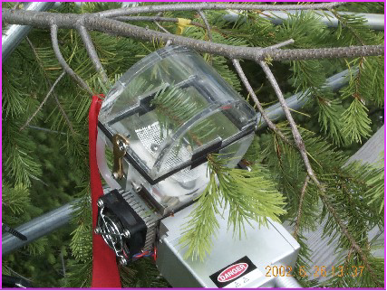
Leaf level measurements
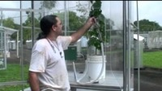
Measuring photosynthesis at the global scale
Global scale photosynthesis

Global scale photosynthesis
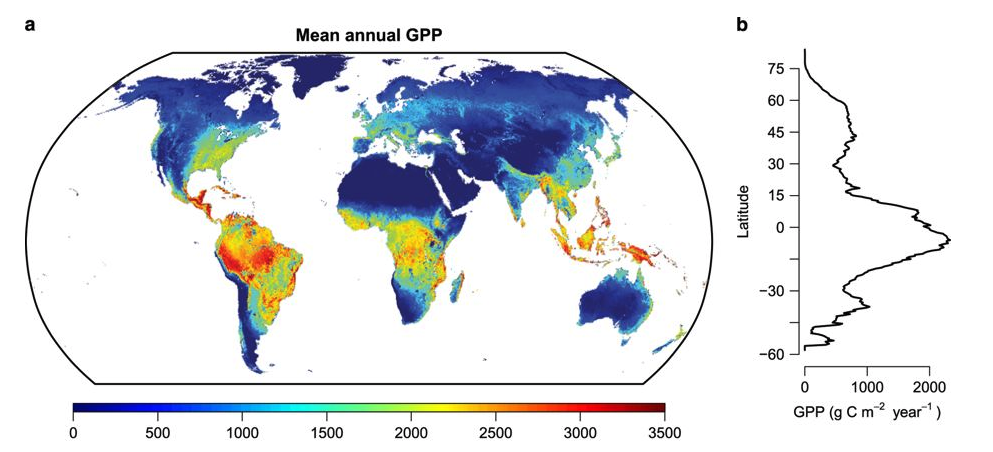
(7.8 x 10-19 J/molecule)
- Efficiency is 7.8/33.2 x 100% = 23.5% (ideal lab conditions)
- Better than most solar panels.
- (CH2O) means 1/6th of a glucose molecule
(33.2 x 10-19 J/8 photons)
The photosynthesis process
- Photosynthesis can be separated into 3 processes:
- photochemical: PAR conversion to chemical energy
- diffusion: CO2 transfer from the air to the chloroplasts
- biochemical: the above chemical energy used to convert CO2 to carbohydrates (sugar, starch, cellulose, etc.).
- The chemical equation for the process (with chlorophyll) is:


+ Energy
The respiration process
- It is reverse of photosynthesis. It produces energy and requires oxygen.
- The equation is:
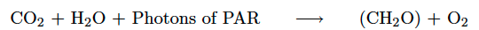

Photosynthetic efficiency of the leaf
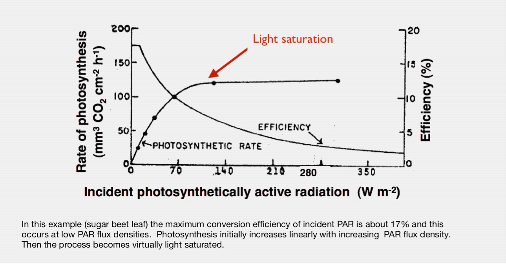
Net photosynthetic rates in agricultural crops and forests
- Most data indicate that ordinary crops/forests convert less than 1% of the incident solar radiation over the growing season.
- Under optimum conditions, this might reach 2.5% for the growing season and 4% over the period of a day in the middle of the growing season of a corn crop.
Test your knowledge
- The response of photosynthesis of vegetation to increasing light can be described as:
- Generally it increases linearly
- At low light it increases slowly then at high light levels it increases faster
- Initially it’s quite linear but then it declines corresponding to declining light use efficiency
- Difficult to know how it’ll respond due to the effects of other environmental variables
Ecosystem respiration (Re)
- Re is made up of plant respiration and that of microbes that decompose soil organic matter and detritus (dead leaves (litterfall), rotten logs, stumps, etc.).
- The former is referred to as autotrophic respiration (Ra) & goes on in leaves (as we’ve mentioned), for growth and maintenance of branches, stems, & roots. The latter is referred to as heterotrophic respiration (Rh). We can write:
- Re = Ra + Rh
- The amount of carbon an ecosystem sequesters depends on not only plant respiration but also the rate of organic matter decomposition.
- Both are strongly affected by climate (temperature) and soil conditions (aeration, soil moisture).
Automated chambers
Soil CO2 efflux: respiration from the soil (Rs)
- A large proportion of ecosystem respiration (Re) comes from the soil. In the case of forests it’s as much as 80%.
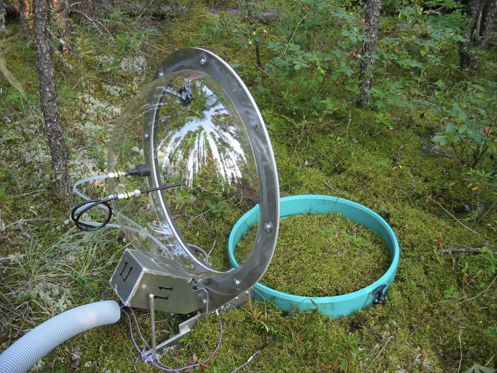
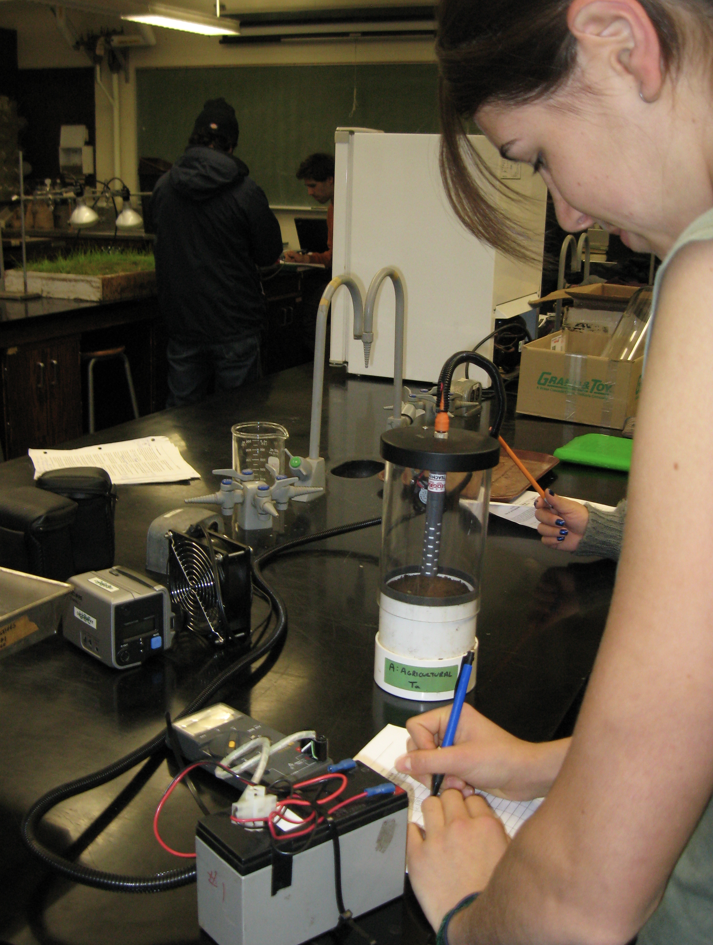
Measuring Rs using chambers
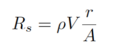
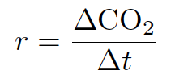
Autotrophic & heterotrophic soil respiration
- Rs is composed of the CO2 produced by microbial decomposition of soil organic matter (SOM) (heterotrophic respiration, Rsh) and by root respiration (autotrophic respiration, Rsa)
- Rs is also strongly affected by climate (temperature) and soil conditions (aeration, soil moisture).
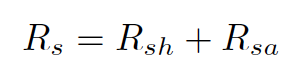
Relationship between Rs and temperature
Rs increases exponentially with T, which is often expressed as:
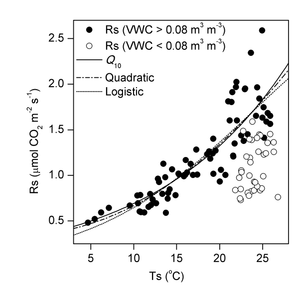
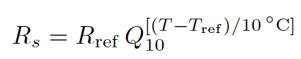
Q10
- Q10 is the relative increase in Rs (or Re) for a 10 K increase in T
- Q10 is about 2 in many biological processes but is frequently found to be as much as 3 for Re and Rs.
- As an example of using the equation below, assuming Q10 = 2 and Tref = 10 °C, when T = 20 °C, Rs = Rref2[(20-10)/10] = 2 Rref.
- Can you show that for T = 30 °C, Rs would be 4 times that at Tref?
Influence of temperature on Rs/Re is an example of a positive climate feedback
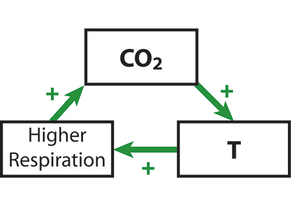
What are other factors that can influence Rs & Re?
Net CO2 exchange
- The net exchange of carbon dioxide (CO2) between terrestrial ecosystems and the atmosphere, called net ecosystem exchange NEE, is the difference between ecosystem respiration Re and gross ecosystem photosynthesis GEP, i.e.,
- When NEE is positive (i.e., Re > GEP), the atmosphere gains CO2 and when it’s negative (Re < GEP) the ecosystem gains CO2. Thus, net ecosystem productivity NEP is
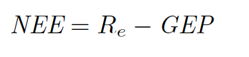
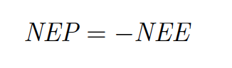
Net CO2 exchange
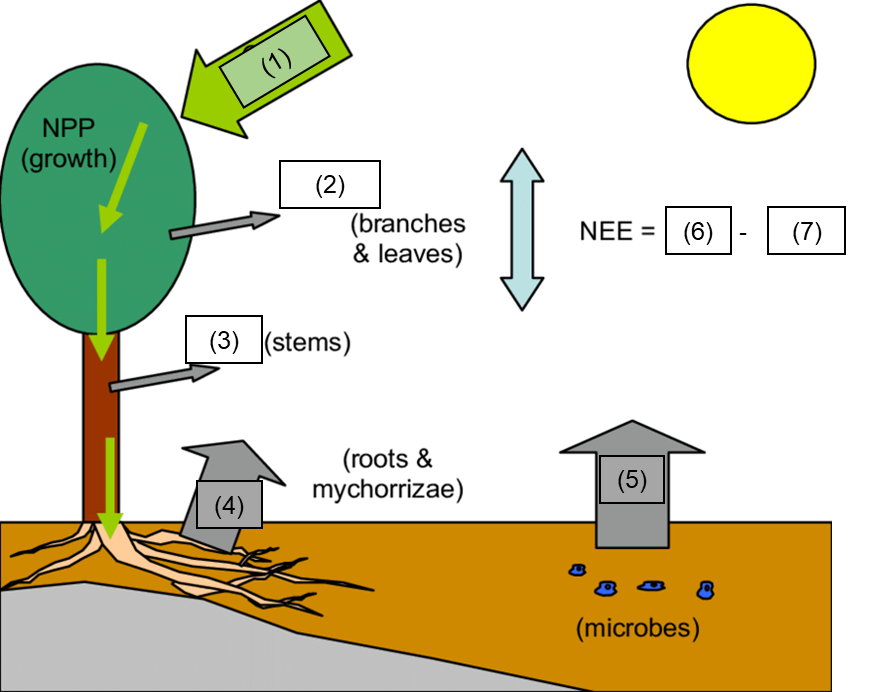
Net CO2 exchange

Total global CO2 emissions
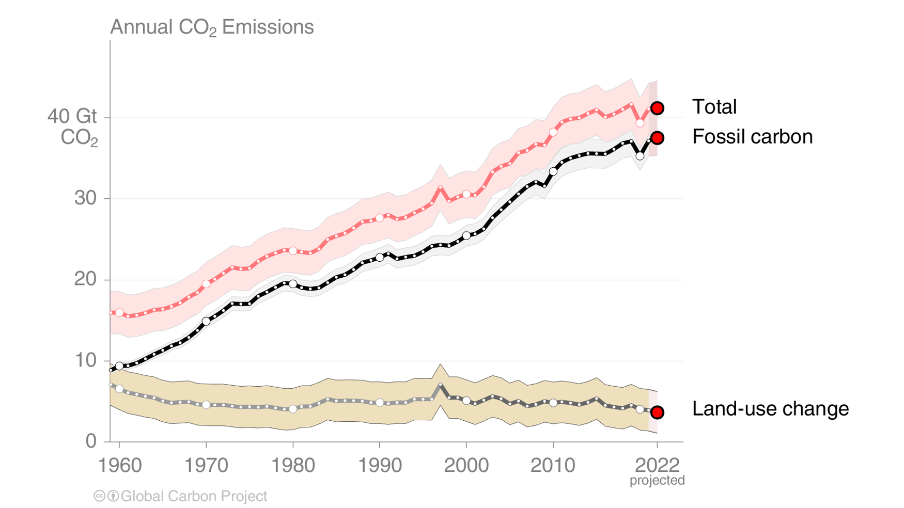
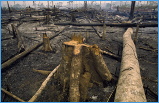
Where does the CO2 go?
Sources & Sinks
- 11%
- 4.5 GtCO2/yr
- 26%
- 10.5 GtCO2/yr
- 29%
- 11.4 GtCO2/yr
- 35.2 GtCO2/yr
- 89%
Terrestrial ecosystems are key components of the global carbon cycle
- 19.1 GtCO2/yr
- 48%
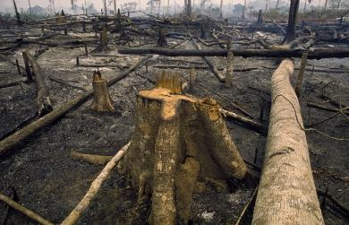
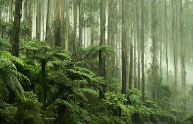
Will ecosystems continue to help offset CO2 emissions?
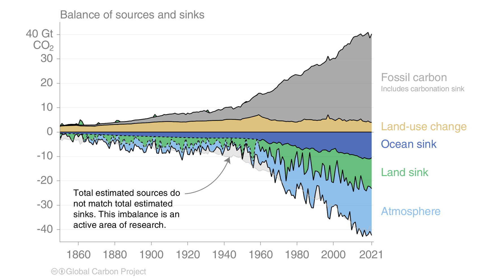
Why is the land sink increasing over time?
The increased storage in terrestrial ecosystems is likely caused by enhanced photosynthesis at higher CO2 levels and nitrogen deposition, and changes in climate favoring carbon sinks such as longer growing seasons in mid-to-high latitudes.
Take home points
- Photosynthesis is the combination of H2O and CO2 in leaves to form carbohydrates. They are oxidized in respiration.
- Photosynthetic efficiency decreases with increasing PAR. Plant canopy photosynthesis accounts for less than 1% of solar irradiance.
- Respiration is the sum of autotrophic (plant) and heterotrophic (organic matter decomposition) respiration.
- Respiration is exponentially related to temperature and therefore is likely to be sensitive to global warming.
- The net CO2 budget (NEE) is equal to Re-GEP